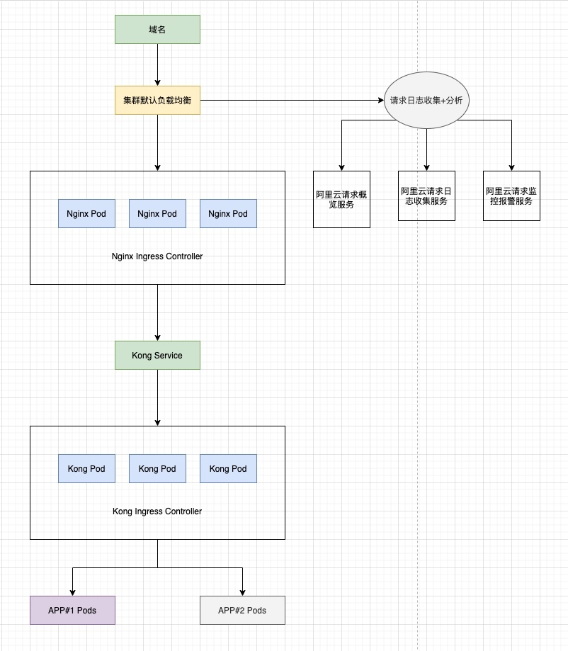
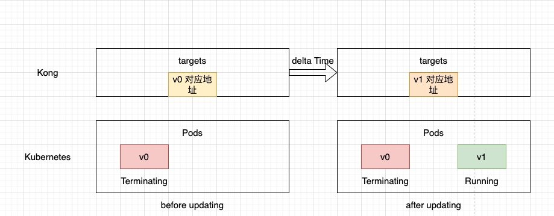

网关顺利搭起来了，接下来就要验收的时候了。我针对 Kong Gateway + Kubernetes 的形式进行了一些基本操作的验收，主要包括创建，重启，升级等。
后端服务背景
后端服务的结构是 nginx + fpm，整体打包成一个镜像，以 deployment 的形式在 K8s 集群中部署。链路架构为

关于为什么在 Kong 网关前嵌套一个阿里云默认 SLB 的原因在之前的文章中有提到，这个不影响本次的验收。
稳定性验收
我在新建部署，重启实例和滚动升级过程中，都会发起一定并发的请求。在多实例互为备份的情况下，我期望做这些操作对服务稳定性是透明的。实际验收中，遇到了以下几个问题：
实例刚新建后遇到 5xx 报错
我们将 nginx 和 fpm 集中在一个容器里，这里就涉及到谁先运行的问题，两者之间总归有一点间隙。之前的问题就是 nginx 先启动后开始接收请求，但是对应的 fpm 还没准备好，因此产生了报错。
改进: 先运行 fpm 后运行 nginx，修改 Dockerfile 文件，
CMD service php5.6-fpm start && nginx -g "daemon off;"
升级过程中，Kong Gateway 显示实例 DNS error.
现象是升级过程中，出现后端服务不可用。我们选择的升级模式是滚动升级，是新建一个新版的实例后，再缩一个老版本的实例，如此滚动，直到完成升级。升级过程中，理论上不应该出现此类异常。
原因分析：Kong 的 Controller 需要将 Pods 起停信息同步到 Kong 中去，两边信息可能存在不一致。后端实例已经发生更新，但 Kong 中还保留着老实例对应的 target 信息。此时，如果请求转发到该 target，此时其后端实例有可能正在 Terminating，也有可能已经被清理了，那么该请求就会出现异常。

我的思路是通过延长后端实例实际 graceful shutdow 时间，当出现上述情况时，我们还保留着老版本实例，虽然它正处于 Terminating 状态，但仍具备处理请求的能力。但是我不能直接修改程序的 graceful shutdown 的逻辑，我通过 K8s Pod 生命周期中支持的 preStop 功能实现。
lifecycle:
preStop:
exec:
command:
- /bin/sh
- '-c'
- sleep 10 && nginx -s quit
引申
当我们升级 Kong deployment 时会不会同样的问题，这个其实取决于 Kong 上层的负载均衡能否及时感知到 Kong 实例的起停变化，但理论上都存在同样的问题。
且 Kong deployment 默认也开启了 preStop 功能：
image: kong:2.2
imagePullPolicy: IfNotPresent
lifecycle:
preStop:
exec:
command:
- /bin/sh
- -c
- kong quit
我们适当增加一定的 “续命时间”：10s，即 sleep 10 & kong quit。
总结
将 Kong 网关和 Kubernetes 结合时，特别是升级过程中，请求的分配存在一定的缺陷，如果我们不能直接从 Kong 中入手的话，我们可以结合 K8s 的特性去尝试。